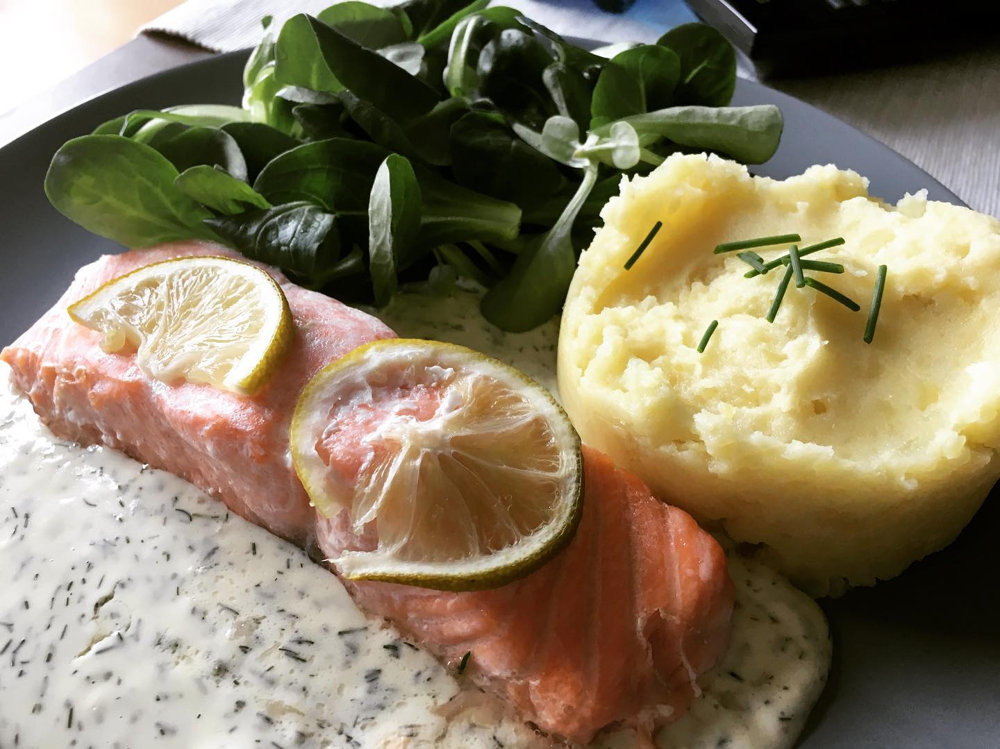

Bylinková omáčka podľa @markeet.maky — Normy Jedál
Lachs mit Limetten. Salmon with limes. #salmon #limes #lachs #limetten #herbalsauce #kräutersauce #potatoes #kartoffel #salat #salad #kochen #cooking #vareni #losos #limetky #bylinkovaomacka #stouchanebrambory #polnicek